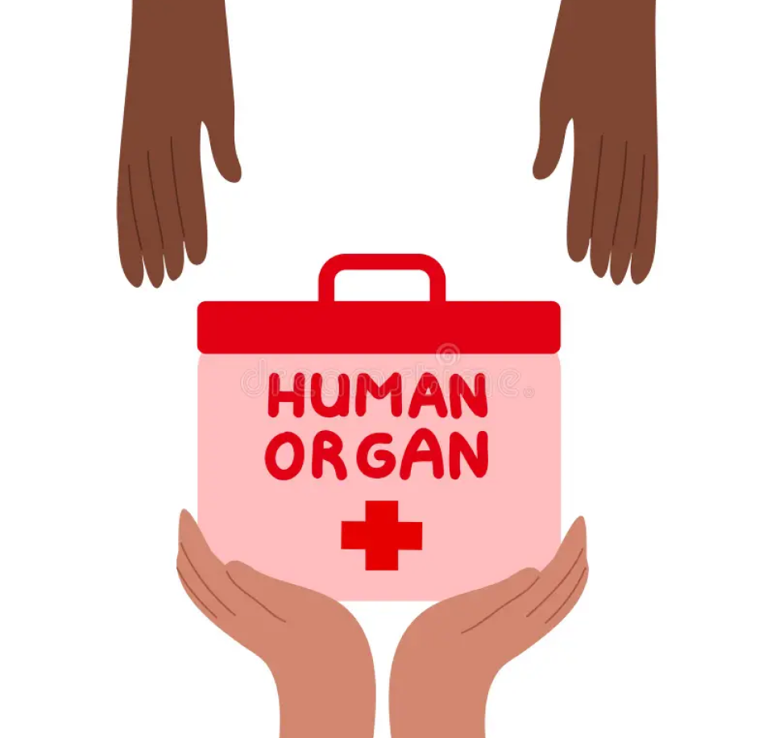

<!DOCTYPE html>
<html lang="en">
<head>
</html>
<meta charset="UTF-8">
<meta http-equiv="X-UA-Compatible" content="IE=edge">
<meta name="viewport" content="width=device-width, initial-scale=1.0">
<link rel="stylesheet" href="hdwstylee.css">
<title>How donation Works</title>

<link rel="stylesheet" href="./faqstyle.css">
  

</head>
<body>

    <section class="navigationDonation">
      <a href="../index.html">
        
      </a>
      
    </section>

    <h2><a href="Learn-About-Donation.html">Home</a>>>Learn About Donation>>How Donation Works</h2>
    <h1>Donation After Life</h1>

    <button class="accordion">HOW TO REGISTER AS DONOR</button>
<div class="panel">
  <p>First, decide to donate your organs, eyes, or tissues. Next, register as a donor.
   Signing up doesn't mean you will be able to donate your organs, eyes, or tissues. 
   Registering usually takes place many years before donation 
    becomes possible. But it is the first step to being eligible to save lives.</p>
</div>

<button class="accordion">MEDICAL CARE PROVIDED TO POTENTIAL DONORS</button>
<div class="panel">
  <p> treat all patients the same. The medical team will do everything possible to save your life. A doctor may put
    you on life support. This keeps blood flowing to the organs. </p>
</div>

<button class="accordion">DOCTOR TESTS FOR BRAIN DAMAGE</button>
<div class="panel">
  <p>Doctors run tests to find out if there’s brain death. A patient with brain death has no brain activity, can’t breathe on
    their own and can’t recover.
    
    Doctors confirm brain death and note the time of death. Then organ donation is possible.</p>
</div>
<button class="accordion">THE ORGAN PROCUREMENT ORGANIZATION</button>
<div class="panel">
  <p>If you’re near death or die, the hospital tells the local Organ Procurement Organization (OPO). This follows federal 
    rules. The hospital will tell the OPO about you. The OPO decides if you’re a possible donor. If so, someone from the OPO
    travels to the hospital.</p>
</div>

<button class="accordion">AUTHORIZING DONATION</button>
<div class="panel">
  <p>The OPO needs your legal consent. They’ll review your state’s registry. If you’re in it, that’s legal consent for donation. 
    If you’re not, they may check your driver’s license, or another legal form. The OPO may ask your closest blood relative 
    (next of kin) for approval.
    
    Once they have approval, they do a medical evaluation. This is your complete medical and social history. They get this 
    from your family.</p>
</div>

<button class="accordion">HOW DONOR ARE MATCHED TO RECOPIENTS</button>
<div class="panel">
  <p>If the evaluation allows you to donate, the OPO contacts the Organ Procurement and Transplantation Network (OPTN). 

    The OPTN is a national database. It has all patients in the U.S. waiting for a transplant. The OPO enters information
     about a donor into the system and the search begins.
    
    The system creates a list of patients who match the donor (by organ). The system offers each available organ to the
    transplant team of the best-matched patient.
    
    The transplant surgeon makes the final decision. They decide whether the organ is good for their patient. They may
     refuse the organ if their patient is too sick or they can’t reach them in time.
    
    Most organs go to patients in the area where doctors recovered the organs. Other organs may go to patients in other
    parts of the country. </p>
</div>

<button class="accordion">WHAT HAPPENS WHEN DOCTORS  REMOVE AND TRANSPLANT ORGANS</button>
<div class="panel">
  <p>Doctors will keep your organs on artificial support. Machines keep oxygen going to the organs. The medical team and 
    OPO official will check the condition of each organ.
    
    A transplant surgical team will replace the medical team that treated the donor before they died. (The medical team 
    trying to save your life and the transplant team are never the same.)
    
    The surgical team will remove the donor’s organs and tissues. They remove the organs, then they remove approved 
    tissues such as bone, cornea, and skin. They close all cuts. Organ donation doesn’t prevent open-casket funerals.
    
    Organs only stay healthy for a short period of time after removal. Minutes count. The OPO official plans for the moving 
    of the organs. The organs go to the hospitals where the patient(s) who need them are. Organs may go by ambulance, 
    helicopter, or commercial airplane.</p>
</div>

<button class="accordion">HOW SURGEONS TRANSPLANT ORGANS</button>
<div class="panel">
  <p>The operation takes place after the transport team arrives at the hospital with the new organ. The person getting the 
    organ is at the hospital. They may be in the operating room waiting for the organ.
    
    Surgical teams work to transplant the new organs into the waiting patient.</p>
</div>

<h3>Matching Donors and Recipients</h3>

<h4>What are the common matching factors?</h4>

<h5>Blood type and body size factor into a match.

    Other factors include:
    <ul>
    <li>how bad the patient’s medical condition is;</li>
    <li>the distance between the donor's and the patient’s hospital;</li>
    <li>the patient's waiting time; and</li>
    <li>if the patient is available. For example:</li>
    <li>If they can’t contact the patient.</li>
    If the patient has an infection or other reason that they can’t do the transplant.</ul>


 <button class="accordion">HEART</button>
<div class="panel">
  <p>The OPTN assigns a status code to patients waiting for a heart transplant. The code relates to how urgently they 
    need a heart.
    
    <h4>How long can a heart survive outside the body?</h4>
    
    A heart can only survive outside the body for four to six hours.
    
    <h4>How do they decide who gets the heart?</h4>
    
    The transplant team offers a heart first to people near the donor's hospital.
    
    If no one near the donor is a match, the team searches farther away.
    
    Body size is important in heart matching. The donor's heart must fit comfortably inside the receiving patient’s rib cage.
    </p>
</div>

<button class="accordion">LUNGS</button>
<div class="panel">
  <p>Lab values, test results, and disease diagnosis help decide the best person to get the lungs.

    They use this information to create a score. The score depends on:
    <ul>
    <li>how badly someone needs a transplant; and</li>
    <li>how long they expect the patient to survive after the transplant.</li>
</ul>
    The common factors help decide who gets the donated lung(s).
    
    <h4>How long can lungs survive outside the body?</h4>
    
    Lungs can only survive outside the body for four to six hours.
    
    <h4>What`s most important in deciding who gets the lungs?</h4>
    
    These factors are most important:
    <ul>
    <li>Body size — lungs must fit within the rib cage.</li>
    <li>Distance between hospitals.</li>
</ul>
    The transplant team offers lungs first to people near the donor's hospital. If no one near the donor is a match, the team searches farther away.
    </p>
</div>

<button class="accordion">LIVERS</button>
<div class="panel">
  <p>Livers can survive the body for 12 to 15 hours. They can travel farther than hearts and lungs.

    <h4>Who gets priority for a liver transplant?</h4>
    
    They offer a donor liver first to whomever matches the common factors and has the highest MELD or PELD score. This shows the most need.
    
    The first patient’s surgeon may not accept the organ. If this happens, they offer the liver to matching patients with the next highest MELD or PELD scores. They do this until someone accepts the organ.
    
    They also consider the distance between the patient’s and the donor’s hospitals.
    </p>
</div>

<button class="accordion">KIDNEYS</button>
<div class="panel">
  <p>Use the common factors to understand how the OPTN matches possible donors to patients who need them.
    This includes:
    <ul>
    <li>blood type;</li>
    <li>length of time on the waiting list;</li>
    <li>if the patient who needs the transplant is a child; and</li>
    <li>the body sizes of the donor and receiving patient.</li>
</ul>
    <h4>What else do they use to match kidneys?</h4>
    
    A negative lymphocytotoxic cross match
    The number of HLA antigens in common between the donor and the receiving patient based on tissue typing
    
    <h4>How long can a kidney survive outside the body?</h4>
    
    Many kidneys can survive outside the body for 36 to 48 hours.
    
    This means they can consider more patients from a wider area.
    
    
    </p>
</div>

<button class="accordion">INTESTINES</button>
<div class="panel">
  <p>A donor intestine matches to someone on the waiting list when the ABO blood group is identical.


    <h4>What can happen if the ABO blood group isn`t identical?</h4>
    
    There’s a higher risk of graft-versus-host disease (GVHD). This is a violent immune reaction. It happens between the white blood cells in the donor organ and the body of the patient who received the organ. It can lead to death.
    
    <h4>What else do they consider when making an intestines match?</h4>
    
    The stomach shrinks in many patients waiting for intestines. Most of the time, the donor has to be smaller than the patient so that the intestine will fit.
    
    People who get intestinal transplants can get a severe infection from cytomegalovirus (CMV) and Epstein-Barr virus (EBV).
    <ul>
    <li>They usually match patients who have never had CMV with CMV-negative donors.</li>
    <li>They usually match patients who have never had EBV with EBV-negative donors.</li>
</ul>
    <h4>How long can the intestine survive outside the body?</h4>
    
    The intestines can survive outside the body for 8 to 16 hours.
    
    </p>
</div>

<h3>The Organ Transplant Process</h3>
<h5>A surgeon moves a donated organ to someone whose organ failed. This is an organ transplant. Certain diseases can 
    lead to organ failure. So can injury or birth defects.</h5>

    <button class="accordion">HOW DO I GET ON THE ORGAN TRANSPLANT WAITING LIST</button>
    <div class="panel">
      <p><ol>
        <li>Get a Referral</li>
      
        Your doctor must refer you. A transplant center or program then checks if a transplant makes sense for you.
   
        <li>Gather Information</li>
   
        Learn about transplant lists, costs, and recovery.
   
        <li>Select a Transplant Center</li>
     
         Make sure the transplant center meets your needs.
    Consider its location, if your insurance will pay, how you pay, and if they have support groups. The Organ   Procurement and Transplantation Network (OPTN) has a list of member transplant center.
   
        <li>Make an Appointment</li>
   
          Contact the transplant hospital. Set an appointment for them to evaluate you. They will decide if you qualify for a transplant.
   
        <li>Get Listed</li>
   
          If you qualify, the transplant team will add you to the OPTN waiting list. The transplant team will contact you in writing about 10 days after they list you.
        </ol></p>
    </div>

    <button class="accordion">HOW MUCH WILL IT COST ME?</button>
    <div class="panel">
      <p>Transplants cost money before, during, and after the surgery. You pay these costs, not the donor.

        Your health insurance may cover some costs. Call your insurance company or your employer's benefits office. Ask 
        what costs your insurance will pay and how.
        
        <h4>What do cost includes?</h4>
        
        <ul>
        <li>Lab tests, organ removal, transplant surgeons, and other operating room staff</li>
        <li>In-hospital stays, getting to and from the transplant hospital for surgery and checkups</li>
        <li>Recovery, including physical or occupational therapy</li>
        <li>Medicine (e.g., anti-rejection drugs)</li>
    </ul>
        </p>
    </div>

    <button class="accordion">WHY SHOULD I MAKE FINANCIAL PLAN?</button>
    <div class="panel">
      <p>You must pay for any costs that insurance doesn’t cover. Think about how you’ll pay these costs. This may include savings, sale of property, etc.

        <h4>Who can help me with plan?</h4>
        
        Members of the transplant team, such as the social worker and financial coordinator, can help you develop a plan. They may put you in touch with groups that help pay transplant costs.
        
        <h4>How else can the financial coordinator help?</h4>
        
        
        Speak with the financial coordinator before you make financial decisions about your transplant.
        
        They can help you:
        <ul>
        <li>understand how your insurance company's benefits apply to transplant surgery;</li>
        <li>make a plan to pay for your transplant;</li>
        <li>make a plan for nonmedical costs, such as living expenses;</li>
        <li>locate sources of funding; and</li>
        <li>understand bills from hospitals, doctors, pharmacies, and other providers.</li>
    </ul>
    </p>
    </div>

    <button class="accordion">CAN MEDICARE OR MEDICAID HELP ME?</button>
    <div class="panel">
      <p>Medicare is a federal program. States operate Medicaid. Both are health insurance programs that may help with your transplant costs.

        <h4>What is Medicare?</h4>
        
        Medicare is for people age 65 or older, people with disabilities, or people who have end-stage renal disease (ESRD).
        
        <h4>What will Medicare cover for my transplant?</h4>
        <ul>
        <li>Medicare Part A is free to those who qualify. It covers inpatient hospital care and some nursing home care.</li>
        <li>Medicare Part B participants pay premiums. Part B covers:</li>
        <li>outpatient care;</li>
        <li>doctor bills;</li>
        <li>some home health care; and</li>
        <li>prescription medicines including, in some cases, anti-rejection drugs.
        Medicare certifies transplant programs throughout the country. You must use a Medicare-approved transplant facility to receive full Medicare benefits.</li>
    </ul>
        <h4>What is Medicaid?</h4>
        
        Medicaid is an insurance program for people with low incomes. The federal government and states fund it. States decide who can get it and what benefits and services they’ll cover.
        
        <h4>What will Medicaid cover for my transplant?</h4>
        
        Some states' Medicaid plans cover only transplants done in the state. That is, unless there’s no transplant center for that organ in the state.
        Some states' Medicaid programs don’t cover transplants. Check what your state Medicaid program covers.</p>
    </div>


    <button class="accordion">HOW DOES THE SYSTEM MATCH ORGANS?</button>
    <div class="panel">
      <p>The OPTN has rules for how donor organs match to patients on the waiting list.
        This might include how sick a patient is. Their blood type may also be a factor. It depends on the organ.</p>
    </div>

    <button class="accordion">WHAT HAPPENS AFTER MY TRANSPLANT?</button>
    <div class="panel">
      <p>Doctors will watch your health years after your transplant. Lab tests will be a regular part of your life.

        Talk to your transplant team. Ask:
        <ul>
        <li>what monitoring you’ll need;</li>
        <li>what you can have done at home; and</li>
        <li>what will require visits to the transplant center or other locations.</li></ul>
        
        <h4>How will my body react?</h4>
        
        Your body may reject a transplanted organ or tissue. It sees it as an invader and tries to destroy it.
        Anti-rejection medicine can help. A weak immune system can be slower in defending against germs.
        You may get infections more easily. You may find it harder to recover from infections and illnesses.
        Protect your health. Follow good prevention practices to avoid illness and injury. Get treatment early when you do get sick.
        </p>
    </div>

    <button class="accordion">WHAT MEDICINES CAN I EXPECT TO TAKE?</button>
    <div class="panel">
      <p>You’ll probably need to take several kinds of medicine. You may take some medicines several times a day and others only on certain days.
         Your medicines or dosages may change.</p>
    </div>

    <button class="accordion">WHY SHOULD I GET TO KNOW MY PHARMACIST?</button>
    <div class="panel">
      <p>Get to know your pharmacist. They can help you:
        <ul>
        <li>understand your medicines;</li>
        <li>manage your medication schedule;</li>
        <li>explain the effects and side effects of medicines; and</li>
        <li>recommend tools like timers and organizers. These help you keep track of medications.</li></p>
    </ul>
    </div>

    <button class="accordion">WHAT SHOULD I EAT, DRINK AND AVOID?</button>
    <div class="panel">
      <p>
        <h4>EAT</h4>
        <ul>
        <li>High-fiber foods, such as raw vegetables and fruits;</li>
        <li>Calcium-rich foods, like low-fat dairy products and green, leafy vegetables. You could also take calcium supplements.</li>
        <li>Foods high in protein, such as meat, poultry, fish, eggs, unsalted nuts, and beans. Protein helps you build muscles and tissue. This helps you heal.</li>
    
        <h4>DRINK </h4>
        
        <li>Plenty of water, unless your doctor tells you to limit fluids.</li>
        
        <h4>AVOID</h4>
        
        <li>A lot of salt, processed foods, and snacks. Use herbs and spices to add flavor.</li>
        <li>Eating too much.</li>
        </p>
    </ul>
    </div>

    <button class="accordion">WHAT KIND OF EXERCISE CAN I DO?</button>
    <div class="panel">
      <p>Limit exercise and muscle strain when you first return home. Talk with your doctor. They’ll tell you what to expect. And they’ll tell you what activity to limit.

        Most people feel weak after surgery. You’ll have to recover from the operation. You’ll also have to recover from the illness or injury that made you need a transplant.
        
        When you feel better, exercise will help you regain your strength. You may feel tired at first. Take rest breaks during exercise. Gradually, increase the amount and type of physical activity you enjoy.
        </p>
    </div>

    <button class="accordion">CAN I CONTACT MY DONOR`S FAMILY?</button>
    <div class="panel">
      <p>You may want to thank your donor’s family. Sometimes donor families want to check on you. Federal law requires transplant centers and Organ Procurement Organizations (OPOs) to protect donors and receiving patients’ privacy. 
        They can arrange for contact between the families when both sides agree. The process may begin with a 
        letter from you to the donor family. Read the guidelines for the first letter in, Contacting my donor Family.</p>
    </div>

    <h3>Living Organ Donation</h3>
    <h6>You can donate a kidney, a piece of your liver, and certain other organs and tissues while alive. About 6,500 living donation transplants take place each year.

        Unlike deceased donors, a living donor can decide who to donate their organ to, helping a recipient get an organ transplant faster. Most living donations happen between family members or 
        close friends. Other people choose to donate to someone they don't know. See stories of real people who have donated and received organs.
        
        Living donation is typically safe for the donor. Most living donors go on to live active, healthy lives and can see the positive impact of their donation.</h6>

        <div class="hoimage">
        
        </div>  

        <div class="hodescript">While alive, you can donate
            one kidney, part of your liver,
            and certain other organs and 
            tissues</div>

        <div class="gift">
            
        </div>   
        
        <div class="giftdescript">
            85% of people on the organ transplant waiting list need  a kidney
        </div>

        <h4 style="margin-left: 200px;">Benefits of living donation</h4>
        <ul style="font-family: 'Franklin Gothic Medium', 'Arial Narrow', Arial, sans-serif;">
        <li>As a living donor, you can choose who receives your organ.</li>
        <li>You can reduce someone’s waiting time for an organ transplant.</li>
        <li>iving kidney donation can prevent—or shorten—the need for kidney dialysis.</li>
        <li>Research has shown that recipients of organs from living donors have better outcomes than those who receive organs from deceased donors.</li>
        </ul>

        <button class="accordion">ORGANS THAT CAN BE DONATED BY LIVING DONORS</button>
    <div class="panel">
      <p>Kidneys are the organs most frequently needed, followed by livers. Both of these organs can be donated by living donors to save someone’s life.

        You may be able to donate:
        <ul>
        <li>One Kidney</li>
        
        85% of people awaiting a transplant need a kidney. A kidney is the most commonly donated organ. Your remaining kidney removes waste from the body.
        
        <li>Segment of the liver</li>
        
        Remaining liver cells grow or refresh until your liver is almost its original size. This happens in a short amount of time for both you and the recipient.
        
        <li>One lobe of the lung, part of the pancreas, or part of the intestine</li>
        
        These donations are rare. While these organs don’t regrow, the portion you donate and the portion that remains can function fully.
    </ul></p>
    </div>


    <button class="accordion">TISSUE THAT CAN BE DONATED BY LIVING DONORS</button>
    <div class="panel">
      <p>You may be able to donate:
        <ul>
        <li>Skin — after surgeries such as a tummy tuck</li>
        <li>Bone — after knee and hip replacements</li>
        <li>Healthy cells from bone marrow and umbilical cord blood</li>
        <li>Amnion — donated after childbirth</li>
        <li>Blood — white and red blood cells—and platelets</li>
        <li>You can donate blood or bone marrow more than once. The body replaces them after you donate.</li>
    </ul></p>
    </div>


<script>
    var acc = document.getElementsByClassName("accordion");
    var i;
    
    for (i = 0; i < acc.length; i++) {
      acc[i].addEventListener("click", function() {
        this.classList.toggle("active");
        var panel = this.nextElementSibling;
        if (panel.style.maxHeight) {
          panel.style.maxHeight = null;
        } else {
          panel.style.maxHeight = panel.scrollHeight + "px";
        } 
      });
    }
    </script>
</body>

